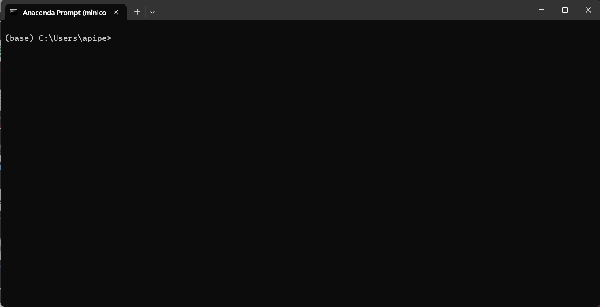
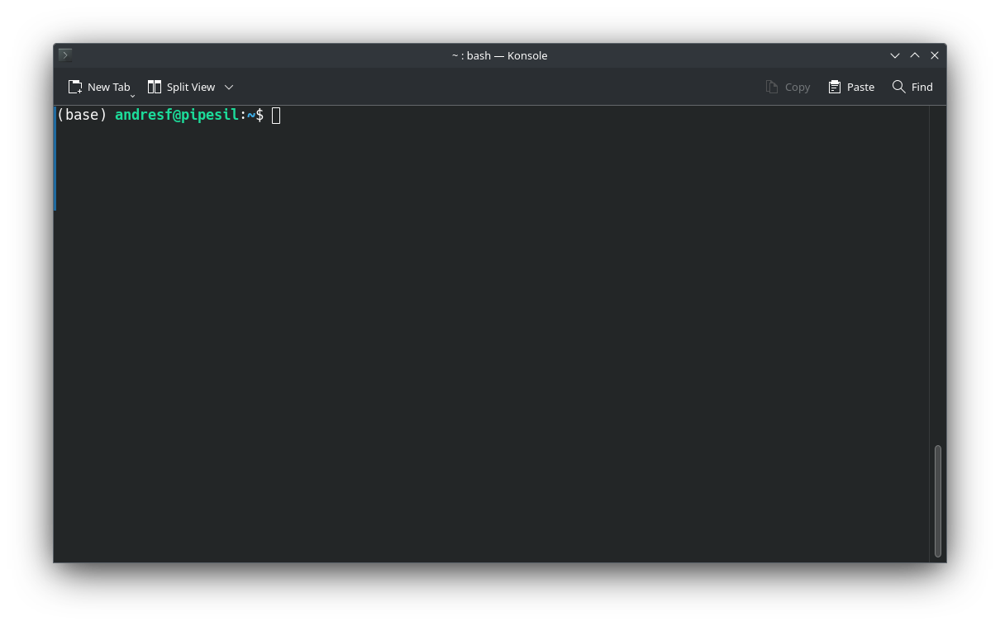
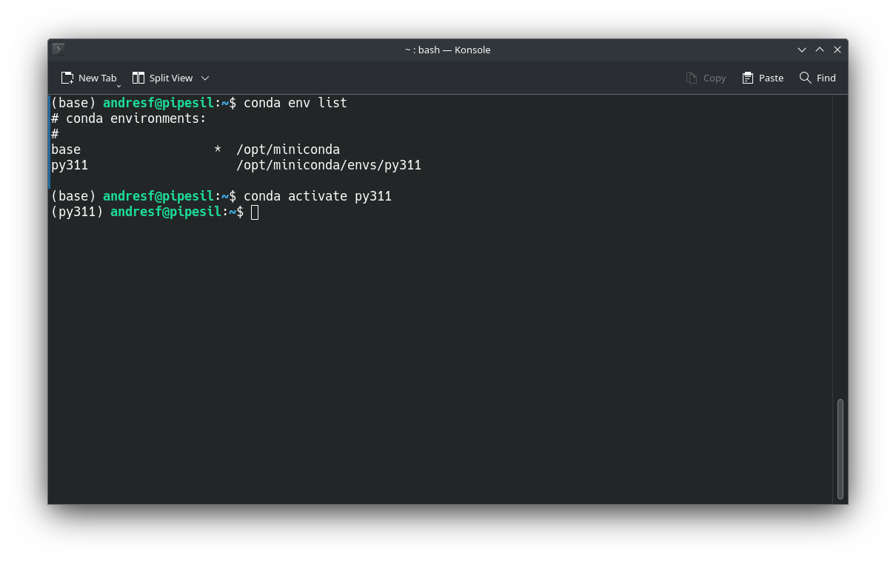
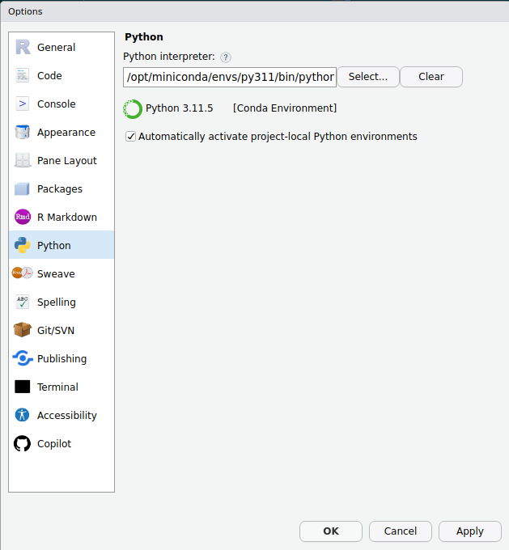
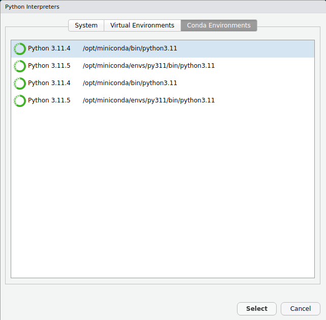

python -VPython 3.11.4Il peut arriver que, pour une raison ou une autre, vous puissiez bénéficier de travailler avec Python. Par exemple, si vous travaillez en géomatique avec QGIS ou même ArcGIS, Python peut être utilisé pour faire vos manipulations de données et vos analyses spatiales. Le fonctionnement de Python ressemble assez à R et vous remarquerez qu’une fois la première barrière de programmation franchie, les langages subséquents sont beaucoup plus faciles à assimiler.
Cette section contient une brève introduction à Python. L’auteur de ce manuel, Essi Parent, a publié l’automne dernier une introduction au calcul numérique avec Python. Le manuel de Essi semble concis et bien fait et vous permettra d’approfondir plus sur l’utilisation de Python. Pour le consulter, vous pouvez soit créer une fork sur votre github et cloner le répertoire, ou alors consulter les fichiers directement dans le navigateur. Sinon, comme pour R, il existe plusieurs bons manuels (par exemple Python for Data Analysis), en anglais toutefois. Rappelez-vous que cette section est facultative; vous pourrez y revenir dans le futur lorsque le besoin se présentera!
Python est un langage de programmation de haut niveau (comme R). Ce langage est apparu en février 1991 et a été créé par Guido van Rossum. Un des objectifs principaux de Van Rossum était de créer un langage libre, simple et intuitif, mais puissant comme d’autres langages déjà existants. Python a été amplement adopté partout dans le monde et est devenu un des langages de programmation les plus populaires d’après différents rangs comme les indices TIOBE et PYPL et les tendances des questions dans Stack Overflow.
Dans les dernières années Python est devenu l’un des outils les plus utilisés pour le calcul scientifique et pour l’analyse de données, même si ce langage n’était pas conçu spécifiquement pour ces tâches. L’utilisation de Python dans la science de données a été poussé par le développement de différents modules qui permettent la manipulation et l’analyse de données, certains des modules les plus populaires pour l’analyse de données en Python étant :
numpy : Ce module permet de manipuler et de stocker de façon efficiente les données dans des objets connus comme tableaux (en anglais, array).
pandas : Permet de travailler avec des données tabulaires avec des étiquettes de file et de colonne, l’objet primaire de ce module est le DataFrame.
matplotlib : C’est le module le plus utilisé pour la visualisation de données sur Python, il peut être considéré comme le module de base pour la visualisation en Python.
SciPy : Ce module a différentes fonctions pour la computation scientifique comme le calcul numérique, le traitement de signaux et d’images, et certains statistiques.
scikit-learn : C’est une des modules les plus utilisés pour l’apprentissage automatique. scikit-learn a des innombrables algorithmes d’apprentissage supervisé et non-supervisé utilisés pour la classification ou la régression.
Il y a différentes façons d’installer Python dans un ordinateur. Dans le cas de Mac et Linux Python vient par défaut avec ces systèmes d’exploitation. Dans le cas de windows il faut le télécharger et l’installer. Une façon d’installer Python sur windows est de télécharger le fichier d’installation directement du site web de Python, une fois le fichier téléchargé, l’exécuter et suivre les instructions pour l’installation.
Une autre alternative pour télécharger Python est à partir de Anaconda. Anaconda c’est une distribution de Python, très utilisée dans la science de données, dont l’objectif est de simplifier la gestion et le déploiement des modules. Le gestionnaire de modules de Anaconda s’appelle conda. Il y a deux options pour installer Anaconda sur un ordinateur :
Télécharger la version complète qui vient avec Python, conda et 1 500 modules pre-installés.
Télécharger une version minimale appellé Miniconda qui ne vient qu’avec Python et conda.
Les deux différences principales entre Anaconda et Miniconda sont (1) l’espace réquis pour l’installation qui est de 3 GO et 400 MO, respectivement, et (2) le temps d’installation puisque ça prends moins de temps à installer Miniconda que Anaconda. L’utilisateur peut choisir Anaconda si n’a pas d’expérience et s’il ne veut pas se préoccuper à installer des modules. L’installation de Miniconda est récommandée pour des utilisateurs qui sont plus experimentés et qui savent déjà quels modules ils vont utiliser. Enfin, si l’ordinateur n’a pas beaucoup d’espace, il est recommandé d’installer Miniconda. Si vous souhaitez connaître davantage sur la distribution Anaconda, vous pouvez suivre le cours d’introduction sur le site web d’Anaconda.
Anaconda prompt est la terminale de ligne de commande d’Anaconda, cette terminale permet d’installer les modules nécessaires et de gérer des dossiers de travail connues comme environnements virtuels. Anaconda prompt est installé par défaut avec la distribution Anaconda ou miniconda. Dans le cas de windows pour accèder à la terminal conda, il faut chercher « Anaconda Prompt » et ouvrir la terminal (Figure 6.1).

Dans linux, une fois que Anaconda a été installé, il suffit d’ouvrir la terminal de commandes de votre distribution linux, si la procédure d’installation a été bien exécutée, le mot base entre parenthèses doit apparaître au début de la ligne de commande.
 L’installation de base de conda vient avec une version de Python. Pour connaître la version de python qui a été installée il faut exécuter la commande python -V ou python --version. Lorsqu’on execute l’une de ces commandes on dois obtenir une ligne comme ci-dessous.
python -VPython 3.11.4Dans le cas de la commande utilisée pour connaître la version de Python on a deux options de commande, -V et --version. Dans les terminaux de commande, ce type de commandes sont précédés d’un seul trait d’union quand on n’utilise qu’une lettre. On utilise deux traits d’union si on utilise le mot au complet pour appeler la commande.
Un environnement virtuel (EV) est un dossier contenant une collection spécifique de modules. Il est possible d’avoir autant d’EV’s que nécessaires. Les environnements permettent de travailler de façon isolée et d’avoir différentes versions d’un même module, ce qui est très convénient et peut eviter des conflicts lorsqu’on travaille sur différents projets. Il existent différents modules qui permettent de créer des EV’s comme virtualenv et venv. conda permet également de créer des EV’s. Pour ce faire il suffit une ligne de commande qui ressemble à celle ci-dessous :
conda create --name <my-env>Il suffit de remplacer <my-env> par le nom que l’on veut pour l’environnement. Il est également possible de créer un EV avec une version spécifique de python, la ligne de commande ci-dessous permet de créer un environnement nommé py311 qui aura la version 3.11 de Python.
conda create -n py311 python=3.11Pour connaitre la liste d’EV’s il faut éxécuter la commande :
conda env listUne fois l’environnement a été crée il est possible de commencer à travailler dans celui-ci. Il faut d’abord l’activer, si l’on veut travailler dans l’EV qu’on vient de créer il faut exécuter la ligne suivante :
conda activate mon_envSi l’EV a été correctement activé le mot

Une fois dans l’environnement il est possible d’installer les modules nécessaires, l’installation se fait en exécutant la ligne suivante :
conda install numpySi vous voulez installer plusieurs modules :
conda install numpy pandas matplotlibPour désactiver un EV :
conda deactivateIl y plusieurs commandes qui peuvent être utilisées, pour obtenir la liste des commandes et des informations sur chacune il suffit d’éxécuter conda -h.
Il existent plusieurs éditeurs de code comme Visual Studio Code ou PyCharm, qui permettent d’éditer et d’exécuter codes Python. Il est également possible de travailler avec Python dans RStudio, pour ce faire, il est nécessaire d’avoir installé Python et d’installer le module reticulate de R (version 1.2 ou supérieure). Il est possible travailler en RStudio avec plusieurs versions de Python, pour choisir une vous pouvez vous servir des fonctions use_python(), use_virtualenv() or use_condaenv() du module reticulate de R. Pour plus d’informations sur l’utilisation du module reticulate vous pouvez visiter la guide officielle. Il est possible de choisir une version de Python par défaut en RStudio, il faut clicker sur Tools -> Global Options -> Python.


Une fois la version de Python a été choisie, il est possible de commencer à travailler avec Python en RStudio.
Rendus à ce point on a déjà franchi toutes les étapes nécessaires pour commencer à travailler en Python. Pour commencer on va faire appel à la fonction print()pour éxécuter notre première ligne de code en Python.
print("Hello world")Hello worldEn Python on retrouve deux types de données principaux, les données numériques et les chaines de caractères.
# Entière
1414# float
3.53.5Tout comme en R, les lignes qui commencent par un # sont des commentaires.
La fonction round() permet d’arrondir de nombre de places décimales d’un nombre décimal.
round(3.14151692, 2)3.14Les données booléenes (True et False) sont considérées aussi comme des données numériques.
Une chaine de caractères, de façon générale, est définie en utilisant des apostrophes, cependant si la chaine de caractères contient une apostrophe, il est récommandé d’utiliser les guillemets. Les chaines servent pour représenter des textes qui peuvent être utilisés de différentes façons.
print('hello')helloprint("Ici c'est mieux d'utiliser des guillemets")Ici c'est mieux d'utiliser des guillemetsLa fonction type() permet de connaître le type de donnée. Dans l’exemple suivant, puisque le deux est entouré des apostrophes, il est reconnu par Python comme une chaine.
type('2')<class 'str'>En Python on peut effectuer les opérations de base :
2 + 243 - 303 * 266 / 23.02 / 0ZeroDivisionError: division by zeroComme d’habitude, si l’on effectue une division par zéro ça entraînera une erreur, dans ce cas, Python va lever une exception nommée « ZeroDivisionError ». Les exceptions sont des erreurs pendant l’exécution d’un code, Python vient par défaut avec 72 exceptions différentes, pour apprendre davantage sur les exceptions et la façon de les gérer vous pouvez visiter la documentation de Python.
Il y a deux autres types de division en Python. Le modulo (opérateur %) permet d’obtenir le reste d’une division, tandis que l’opérateur // permet d’obtenir la partie entière.
7 % 217 // 23Enfin, l’opérateur puissance est **.
3 ** 327Les chaines peuvent être concaténées à l’aide de l’opérateur +. Le code ci-dessous concatène deux chaines nommées code et nom_cours.
code = 'gaa-7007'
nom_cours = "Analyse et modélisation d'agroecosystèmes"
print(code + ' ' + nom_cours)gaa-7007 Analyse et modélisation d'agroecosystèmesL’opérateur * permet d’afficher plsieurs fois une chaine.
3 * code'gaa-7007gaa-7007gaa-7007'Il est également possible de concaténer une chaine et un numéro. Pour effectuer cette opération il faut que utiliser la fonction str(), afin de convertir un numéro dans une chaine.
print(code + ' ' + str(777))gaa-7007 777En fait, les chaines peuvent être considerées comme des listes en Python, mais elles ne sont pas modifiables. Ainsi, il est possible d’accèder aux élements des chaines.
nom_cours[0]'A'nom_cours[5:17]'se et modéli'nom_cours[6:-3]"e et modélisation d'agroecosystè"D’autres méthodes associées aux chaines de caractères comme split(), find(), count(), etc. peuvent être trouvées dans cette guide de l’Université Paris Cité.
Les séquences, sont une collection finite de données ordonées par leur position. Il éxistent plusieurs types de séquences comme les listes, les tuples et les dictionnaires. Les chaînes de caractères sont aussi considerées des séquences.
Une liste est une collection qui peut stocker données de n’importe quelle type. Les listes sont considérées comme la structure de données fondamentale en Python. Pour créer une liste il faut utiliser la fonction list() ou utiliser les crochets ([]).
ma_liste = [1 ,2 ,3]
ma_liste[1, 2, 3]ma_liste_2 = [2.93758, 'a', 45, [2, 3]]
ma_liste_2[2.93758, 'a', 45, [2, 3]]Il est possible d’ajouter des éléments à la fin d’une liste à l’aide de la méthode append.
ma_liste_2.append('abc')Pour insérer des éléments à un position spécificifique il faut utiliser la méthode insert.
ma_liste_2.insert(3, 'euler')Enfin, la méthode pop permet de retirer élements d’une liste.
ma_liste_2.pop(2)45ma_liste_2[2.93758, 'a', 'euler', [2, 3], 'abc']Les tuples sont des collections similaires aux listes, pour les créer il faut utiliser la fonction tuple() ou utiliser les parenthèses (()). La différence entre les listes et les tuples est que les tuples ne sont pas mutables, c’est à dire qu’il n’est pas possible de changer le contenu d’une tuple.
ma_tuple = (0.2, [4, 'a'], 'R')
ma_tuple(0.2, [4, 'a'], 'R')Il est également possible de créer des listes ou des tuples à partir d’une chaine de caractères.
str_1 = "ma_tuple"
chaine_to_tuple = tuple(str_1)
chaine_to_tuple('m', 'a', '_', 't', 'u', 'p', 'l', 'e')Les dictionnaires est une structure de données qui permet de stocker des valeurs et les associer à une clé unique (key/value pairs, en anglais). Pour créer une dictionnaire il faut construire des paires à partir de la sintaxe 'clé' : 'value' et séparer chaque paire par une virgule (,). En fin, tous les paires doivent être entourés d’une paire d’accolades ({}).
dictio_vide = {} # Cette ligne crée un dictionnaire vide
mon_dictio = {'name' : 'Issac', 'last_name' : 'Newton'}
mon_dictio{'name': 'Issac', 'last_name': 'Newton'}Il est possible de connaître les clés d’un dictionnaire en utilisant la méthode keys.
mon_dictio.keys()dict_keys(['name', 'last_name'])La méthode del() permet de supprimer des paires d’un dictionnaire.
del(mon_dictio['name'])
mon_dictio{'last_name': 'Newton'}Au début de ce chapitre, on a presenté certains modules qui ne font pas partie des fonctionnalités de basse de Python, ces sont des modules tiers qui doivent être installés séparement. Les méthodes qu’on a utilisé jusqu’à présent viennent par défaut avec Python. Cependant, les modules tiers ont autres types de structures qui sont très utilisés dans la science de données, c’est le cas des arrays du module numpy et des tableaux (Dataframes). Les tableaux sont l’une des structures les plus utilisées dans la science de données, en Python, le module Pandas est le plus utilisé pour la manipulation de tableaux. Le module Polars permet aussi de travailler avec des tableaux, ce module a gagné popularité dans les dernières années puisqu’il est plus rapide comparé à Pandas. Cependant, Pandas à des advantages par rapport à Polars en ce qui concerne la compatibilité avec d’autres modules de Python, notamment, avec les modules de visualisation et d’intélligence artificielle.
Les arrays du module NumPy sont des structures de données conçues pour gérer de façon efficace opérations sur les données. Les arrays sont la base de plusieurs structures d’autres modules de Python. Un array peut avoir plusieurs dimensions, c’est pourquoi ils supportent ne seulement des fonctions mathématiques simples mais aussi des calculs d’algèbre linéaire avancée. NumPy offre différentes fonctions pour la création d’arrays, comme par exemple la fonction arange(). Avant d’appeler les fonctions du module NumPy il faut l’importer, pour cela on utilise la syntaxe import <package_name> as <alias>.
import numpy as np
np.arange(1, 5, 1)array([1, 2, 3, 4])Il est possible de créer des arrays à partir d’une liste.
np.array(ma_liste)array([1, 2, 3])La fonction zeros() permet de créer un array de zéros.
np.zeros(6)array([0., 0., 0., 0., 0., 0.])De même, la fonction ones() permet de créer un array de uns.
np.ones(5)array([1., 1., 1., 1., 1.])Il est possible de créer des matrices à l’aide de la méthode reshape.
array_1d = np.arange(15)
matrice = array_1d.reshape(5,3)
matricearray([[ 0, 1, 2],
[ 3, 4, 5],
[ 6, 7, 8],
[ 9, 10, 11],
[12, 13, 14]])Il y a beaucoup d’autres fonctions qui font partie du module NumPy, pour les consulter vous pouvez visiter le site officiel du module.
Les tableaux sont des structures de données qui ressemblent aux feuilles de calcul d’Excel. Un tableau peut être aussi vu comme une array de deux dimensions auquel on assigne des noms (labels) pour les colonnes et des indices pour les lignes. Le module le plus utilisé pour la création de tableaux est Pandas, ce module permmet de charger des tableaux à partir de fichiers de différents formats, à partir de fichiers qui se trouvent sur internet, ou à partir des données générées par l’utilisateur directement sur Python à partir des objets crées à l’aide des fonctions de base ou des modules tiers. Tout comme en R, les tableaux doivent avoir des colonnes d’une même longueur et les colonnes peuvent être de différentes types de données. Une des fonctions de Pandas qui permet de créer des tableaux est DataFrame.
import pandas as pd
tableau_1 = pd.DataFrame(matrice)
tableau_1 0 1 2
0 0 1 2
1 3 4 5
2 6 7 8
3 9 10 11
4 12 13 14Dans le code précédent, le tableau a été construit à partir de la matrice qui avait été crée précédemment à l’aide du module NumPy. Il est à noter que les colonnes n’ont pas été nommées, pour ce faire on peut créer une liste contenant les noms des colonnes, et assigner la liste au paramètre columns du tableau.
tableau_1.columns = ['col_1', 'col_2', 'col_3']Il est également possible de créer des tableaux à partir d’un dictionnaire. Pandas réconnait les clés du dictionnaire comme les noms des colonnes.
dictio_climat = {'sites' : ['site1', 'site2', 'site3', 'site4'],
'temperature' : [25.3, 20.1, 15.4, 18.9],
'humid_rel' : [72, 68, np.nan, 70]}
df_climat = pd.DataFrame(dictio_climat)
df_climat sites temperature humid_rel
0 site1 25.3 72.0
1 site2 20.1 68.0
2 site3 15.4 NaN
3 site4 18.9 70.0Dans le code précedent, on a crée une valeur manquante à l’aide de la fonction nan du module NumPy. Il est possible d’importer les données à partir d’un fichier, certains des formats qui peuvent être lus par Pandas sont csv, txt, html, excel, etc. Une des formats le plus utilisé est csv, pour lire un fichier de ce type il faut utiliser la fonction read_csv().
data_abalone = pd.read_csv('data/abalone.csv')
data_abalone Type LongestShell Diameter ... VisceraWeight ShellWeight Rings
0 M 0.455 0.365 ... 0.1010 0.1500 15
1 M 0.350 0.265 ... 0.0485 0.0700 7
2 F 0.530 0.420 ... 0.1415 0.2100 9
3 M 0.440 0.365 ... 0.1140 0.1550 10
4 I 0.330 0.255 ... 0.0395 0.0550 7
... ... ... ... ... ... ... ...
4172 F 0.565 0.450 ... 0.2390 0.2490 11
4173 M 0.590 0.440 ... 0.2145 0.2605 10
4174 M 0.600 0.475 ... 0.2875 0.3080 9
4175 F 0.625 0.485 ... 0.2610 0.2960 10
4176 M 0.710 0.555 ... 0.3765 0.4950 12
[4177 rows x 9 columns]Il est également possible de charger jeux de données qui sont hébergées sur des sites internet. Dans ce cas, on va importer une jeu de données qui se trouve dans le site web de Données Québec, appelé « Inventaire des contaminant atmosphériques du Québec ». Comme en R, ils existe la fonction head qui permet d’observer seulement les premières lignes d’un tableau.
df_contamin = pd.read_csv('https://www.donneesquebec.ca/recherche/dataset/f50b0822-0c50-4bc8-9794-0093a5fb8201/resource/50a1b496-793c-4e1e-9906-6a6363944ca8/download/inventaire_contaminants.csv')
df_contamin.head() Annee Secteur ... Contaminant Emissions(t)
0 1990 Fabrication ... Composés organiques volatils (COV) 937.820352
1 1990 Fabrication ... Particules totales (PM) 0.015100
2 1990 Fabrication ... Oxydes d'azote (NOX) 0.505100
3 1990 Fabrication ... Composés organiques volatils (COV) 3.261800
4 1990 Fabrication ... Particules <2,5 microns (PM2,5) 0.015100
[5 rows x 6 columns]La méthode describe de Pandas, permet d’obtenir les statistiques descriptives des colonnes de type numérique d’un tableau.
df_contamin.describe() Annee Emissions(t)
count 19062.000000 19047.000000
mean 2006.211888 6807.094418
std 9.154983 40403.432236
min 1990.000000 0.000000
25% 1998.000000 14.883811
50% 2007.000000 139.908748
75% 2014.000000 1138.762750
max 2021.000000 852703.552300La méthode dtypes permet de connaître le type de données de chacune des colonnes du tableau.
df_contamin.dtypesAnnee int64
Secteur object
Sous-secteur object
Categorie object
Contaminant object
Emissions(t) float64
dtype: objectLa sortie du code précédent montre les noms des colonnes, toutes les noms contient des majuscules, un nom contient une trait d’union et le nom de la dernière colonne contienne l’unité de mesure entre parenthèses. En générale, il est recommandable que les noms des colonnes (et des variables) soient écrits entièrement en minuscules, si les noms sont très longs, c’est préférable de les séparer à l’aide d’un tiret bas. Enfin, dans le cas du nom contenant l’unité de mesure, il est préférable d’enlever les parenthèses et de séparer l’unité du nom avec un tiret bas. Le code ci-dessous permet de changer les noms des variables à l’aide de la fonction rename. La guide de style pour écrire code en Python PEP 8 contient les bonnes pratiques pour écrire code en Python.
df_contamin = df_contamin.rename(columns={'Annee' : 'annee',
'Secteur' : 'secteur',
'Sous-secteur' : 'sous_secteur',
'Categorie' : 'categorie',
'Contaminant' : 'contaminant',
'Emissions(t)' : 'emissions_t'})Pour accèder à une colonne spécifique, il suffit d’appeler le tableau et d’ajouter le nom de la colonne entouré de crochets.
df_contamin['secteur']0 Fabrication
1 Fabrication
2 Fabrication
3 Fabrication
4 Fabrication
...
19057 Poussière
19058 Poussière
19059 Poussière
19060 Poussière
19061 Poussière
Name: secteur, Length: 19062, dtype: objectIl est possible de filtrer les tableaux en utilisant la fonction query(), il est possible d’ajouter différentes requêtes à cette fonction en utilisant les différents opérateurs d’égalité (==, !=, is), de comparaison (<, <=, >, >=) et booléenes (and, or, not).
df_contamin.query('secteur == "Fabrication"') annee secteur ... contaminant emissions_t
0 1990 Fabrication ... Composés organiques volatils (COV) 937.820352
1 1990 Fabrication ... Particules totales (PM) 0.015100
2 1990 Fabrication ... Oxydes d'azote (NOX) 0.505100
3 1990 Fabrication ... Composés organiques volatils (COV) 3.261800
4 1990 Fabrication ... Particules <2,5 microns (PM2,5) 0.015100
... ... ... ... ... ...
18537 2021 Fabrication ... Composés organiques volatils (COV) 34.191300
18538 2021 Fabrication ... Particules <10 microns (PM10) 0.177485
18539 2021 Fabrication ... Monoxyde de carbone (CO) 47.663831
18540 2021 Fabrication ... Dioxyde de soufre (SO2) 0.088082
18541 2021 Fabrication ... Oxydes d'azote (NOX) 7.354698
[3564 rows x 6 columns]Une autre façon d’effectuer le filtrage de données :
df_contamin.query('secteur == "Agriculture" & emissions_t > 100') annee secteur ... contaminant emissions_t
465 1990 Agriculture ... Composés organiques volatils (COV) 23008.322620
466 1990 Agriculture ... Particules <2,5 microns (PM2,5) 364.894541
467 1990 Agriculture ... Particules <10 microns (PM10) 1757.730409
468 1990 Agriculture ... Particules totales (PM) 6329.298712
469 1990 Agriculture ... Particules <10 microns (PM10) 554.653427
... ... ... ... ... ...
19005 2021 Agriculture ... Particules <2,5 microns (PM2,5) 8600.000000
19006 2021 Agriculture ... Particules <10 microns (PM10) 18060.000000
19007 2021 Agriculture ... Particules <10 microns (PM10) 2921.951688
19008 2021 Agriculture ... Particules <2,5 microns (PM2,5) 584.390337
19009 2021 Agriculture ... Particules totales (PM) 6431.766867
[512 rows x 6 columns]Comme en R, il est possible de regrouper des données selon les facteurs d’une variable. Dans ce cas, on va obtenir la moyenne annuelle des émissions des particules totales (PM) de chaque sous-secteur de l’agriculture. Pour effectuer le regroupement on utilise la fonction groupby().
(
df_contamin
.query('secteur == "Agriculture" & contaminant == "Particules totales (PM)"')
.loc[:, ['annee', 'sous_secteur', 'emissions_t']]
.groupby(['annee', 'sous_secteur']).mean()
) emissions_t
annee sous_secteur
1990 Production animale 6329.298712
Production de cultures agricoles 20635.033027
1991 Production animale 6307.397542
Production de cultures agricoles 20623.918071
1992 Production animale 6388.488643
... ...
2019 Production de cultures agricoles 25176.715491
2020 Production animale 7950.949838
Production de cultures agricoles 25444.213552
2021 Production animale 7928.066565
Production de cultures agricoles 25113.266342
[64 rows x 1 columns]Les pas suivis dans le code précedent ont été les suivants :
Filtrage du tableau ;a l’aide de la fonction query, on n’a retenu que les données appartenant au secteur agriculture et au contaminant particules totales.
Selection des colonnes annee, sous-secteur et emissions_t à l’aide de la fonction loc().
Regroupement (fonction groupby) et calcul de la moyenne annuel des émissions par sous-secteur.
Boucles
Fonctions
Les gestionnaires de modules
Numpy, Pandas, Visualisation
Fin